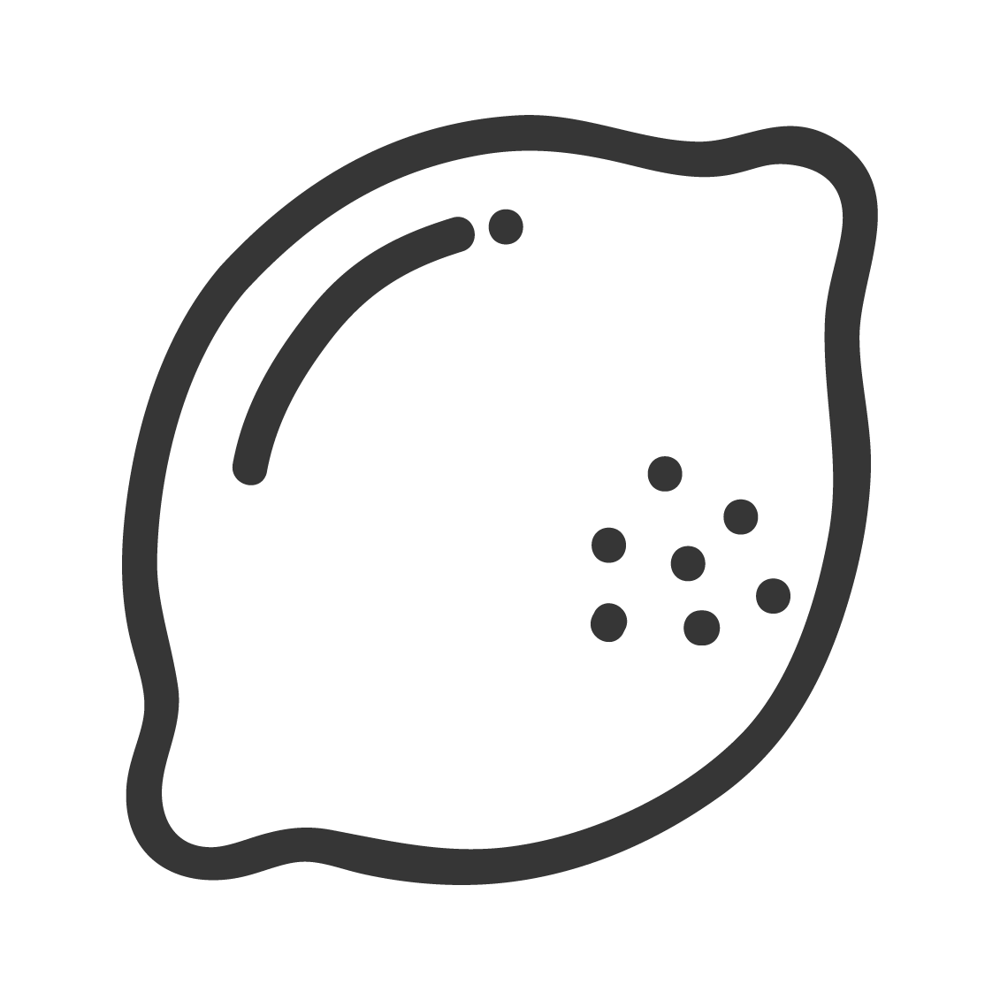
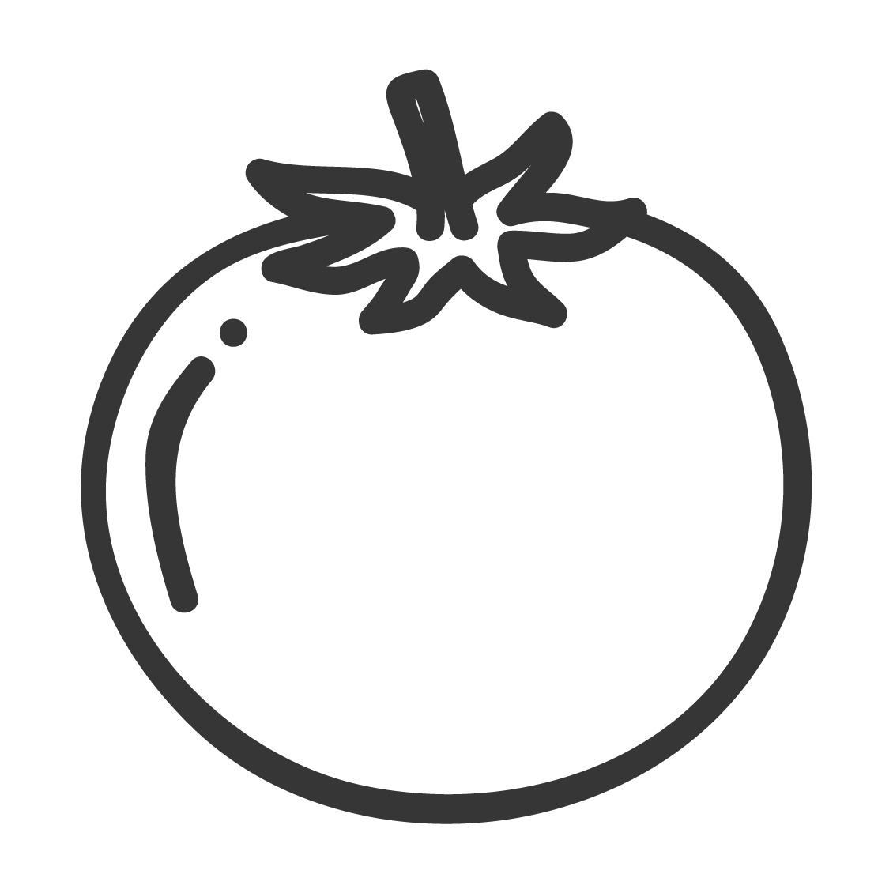
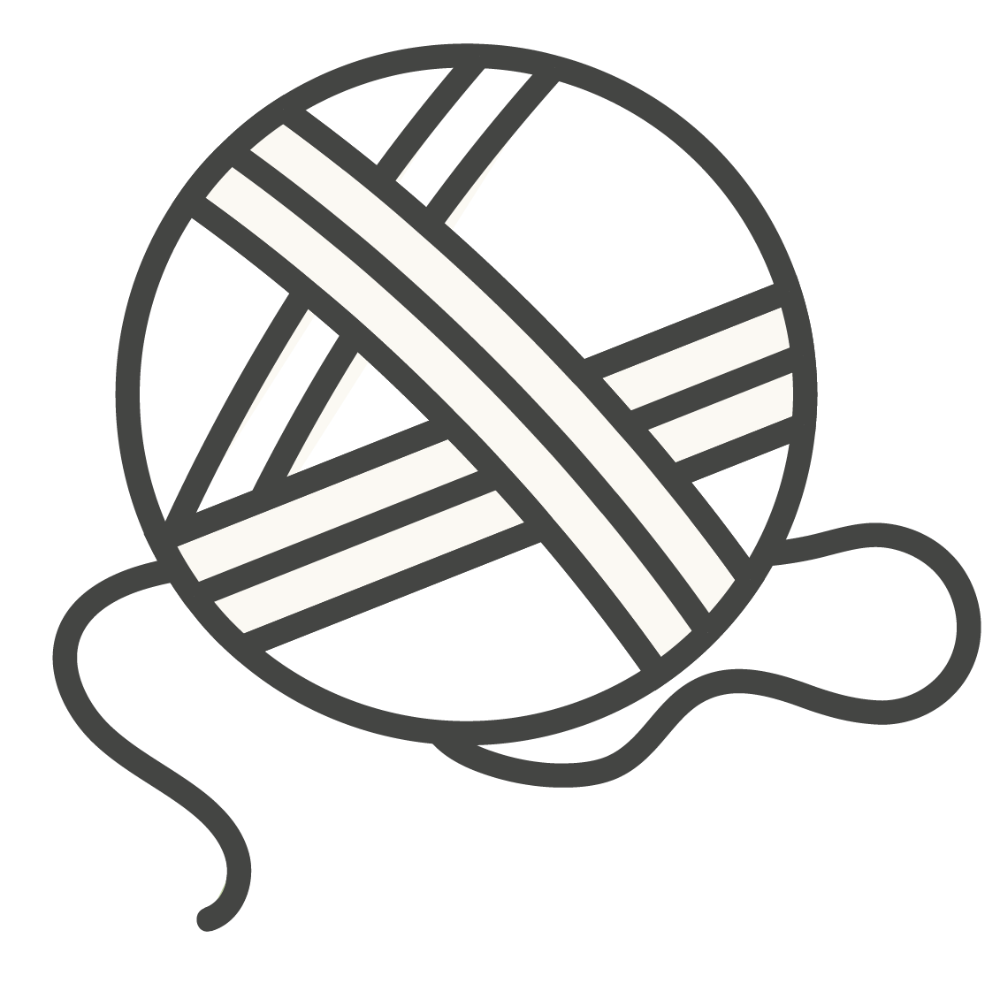

EXPORTACIONES DE LOS 30 COMPLEJOS DE LAS ECONOMÍAS REGIONALES
Acumulado ENERO - DICIEMBRE 2019 - Variaciones interanuales
Complejo GANADERO
USD 309.769.344
Participación 4,3%
Complejo PORCINO Y CAPRINO
USD 315.065.280
Participación 4,3%
Complejo AVÍCOLA
USD 431.617.632
Participación 6%
Complejo ACUÍCOLA
USD 264.472.744
Participación 3,7%
Complejo FRUTÍCOLA (Manzanas, peras y membrillos)
USD 324.017.834
Participación 4,5%
Complejo FRUTÍCOLA
(F. Secos)
USD 27.249.688
Participación 0,4%
Complejo FRUTÍCOLA
(Carozo)
USD 29.109.143
Participación 0,4%
Complejo FRUTÍCOLA
(Frutas finas)
USD 79.554.944
Participación 1,1%
Complejo FRUTÍCOLA
(Frutas tropicales)
USD 44.766.180
Participación 0,6%

Complejo CITRÍCOLA
USD 829.473.628
Participación 11,4%

Complejo HORTÍCOLA
USD 169.542.290
Participación 2,3%
Complejo PAPERO
USD 219.353.873
Participación 3%
Complejo OLIVÍCOLA
USD 149.805.533
Participación 2,1%
Complejo VITIVINÍCOLA
USD 1.247.756.830
Participación 17,2%
Complejo LEGUMBRERO
USD 452.941.183
Participación 6,3%

Complejo MANISERO
USD 860.717.333
Participación 11,9%
Complejo AZUCARERO
USD 94.679.036
Participación 1,3%
Complejo APÍCOLA
USD 146.447.151
Participación 2%
Complejo ARROCERO
USD 159.221.256
Participación 2,2%
Complejo ALGODONERO
USD 117.981.943
Participación 1,6%
Complejo TEALERO
USD 89.238.298
Participación 1,3%
Complejo YERBATERO
USD 80.759.324
Participación 1,1%
Complejo TABACALERO
USD 229.419.217
Participación 3,2%
Complejo ESPECIERO
USD 4.386.463
Participación 0,1%
Complejo LÁCTEO
USD 34.546.978
Participación 0,5%
Complejo LÁCTEO PROCESADO
USD 24.967.126
Participación 0,3%
Complejo GIRASOLERO
USD 18.678.617
Participación 0,3%
Complejo MAICERO
USD 119.305.889
Participación 1,6%

Complejo LANERO
USD 230.081.161
Participación 3,2%
Complejo FORESTO-INDUSTRIAL
USD 139.531.209
Participación 1,9%
IMPORTACIONES
Economías Regionales
USD
870
millones de
Dólares Importados
USD
190
millones MENOS
que en 2018
↓-17,9%
i.a.
SALDO
COMERCIAL
Economías
Regionales
USD 6.374,4
millones de Dólares
USD 82
millones más de SUPERÁVIT comercial
que en 2018
↑1,3%
i.a.
Fuente: CAME en base a INDEC


.jpg)
.jpg)
.jpg)
.jpg)
.jpg)
.jpg)
.jpg)
.jpg)
.jpg)
.jpg)
.jpg)
.jpg)
.jpg)
.jpg)
.jpg)
.jpg)
.jpg)
.jpg)
.jpg)
.jpg)
.jpg)

{kind=link}
{kind=link}
{kind=link}
{kind=link}
{kind=link}
{kind=link}
{kind=link}
{kind=link}
{kind=link}
{kind=link}
{kind=link}
{kind=link}
{kind=link}
{kind=link}
{kind=link}
{kind=link}
{kind=link}
{kind=link}
{kind=link}
{kind=link}
{kind=link}